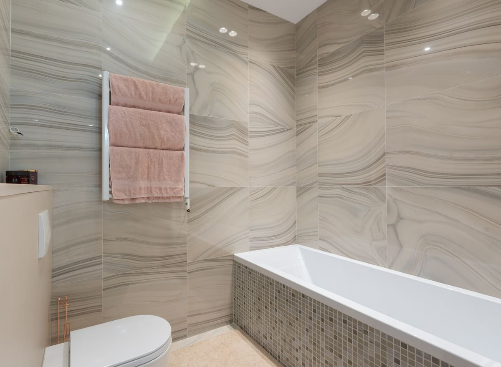
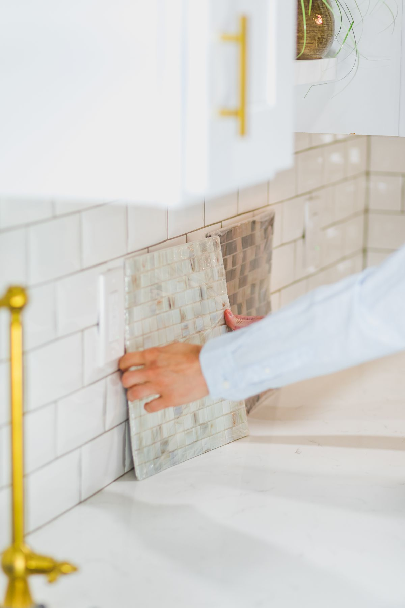
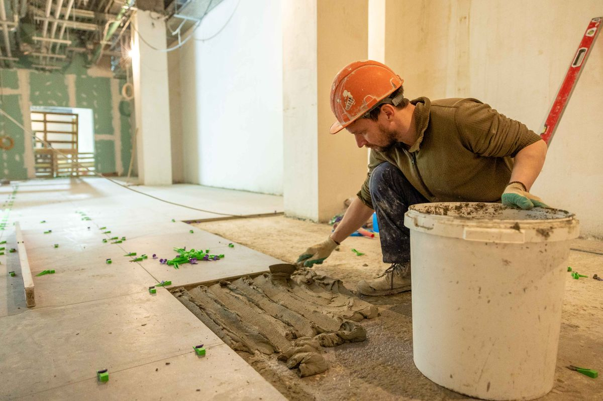
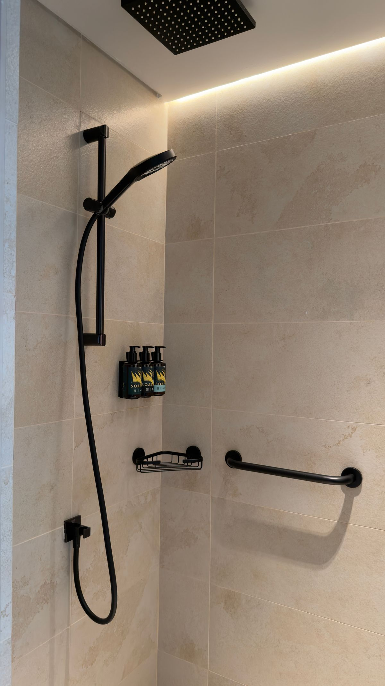
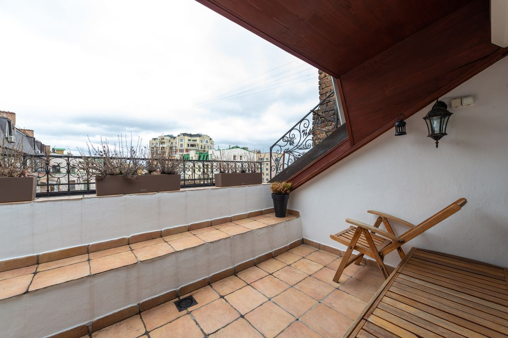
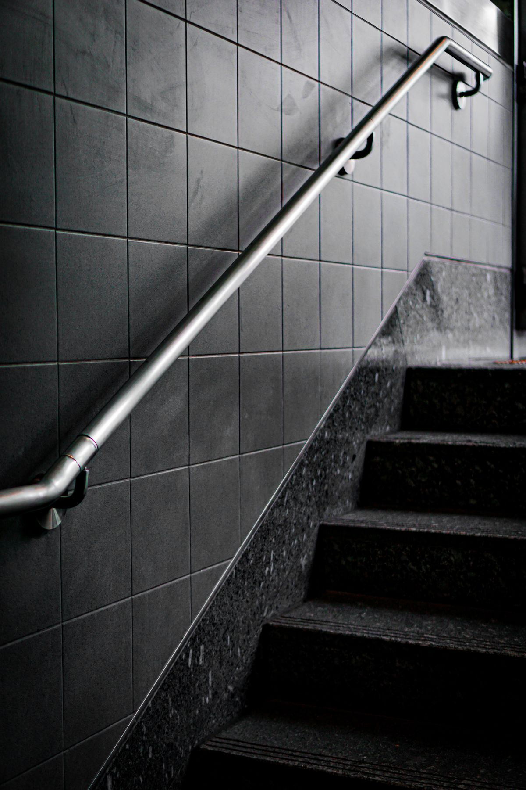

Carrelage et faïence de salle de bains
Revêtement complet du mur au sol. La dépose de l’ancien carrelage et l’évacuation des gravats sont comprises dans le prix.
Carrelage, faïence et grès cérame à Dijon et ses environs : les mesures tombent juste, les joints restent nets. Dépose, étanchéité et évacuation des gravats comprises. Visite technique et devis gratuits.
Nous intervenons à toutes les échelles, du simple contour de receveur de douche au sol d’un appartement entier.
Revêtement complet du mur au sol. La dépose de l’ancien carrelage et l’évacuation des gravats sont comprises dans le prix.
Séjour, couloir, balcon et terrasse. Les différences de niveau et les chapes abîmées sont reprises avant la pose.
Faïence, mosaïque et verre découpés sur mesure. Les réservations pour prises, plaque et hotte sont coupées proprement au disque diamant.
Nous retirons les joints noircis et refaisons joints et silicone anti-moisissure. Dans la plupart des salles de bains, c’est terminé en une journée.
Étanchéité liquide appliquée sous le carrelage. Le receveur, le siphon et la jonction mur-sol sont traités en plus.
Entrée d’immeuble, marches d’escalier et abords du bâtiment. Nous utilisons des matériaux résistants au gel.
Avant de commencer, nous donnons le prix et le délai par écrit.
Nous mesurons la surface et vérifions l’état du support et de la plomberie. La visite est gratuite.
Matériaux et main-d’œuvre sont détaillés séparément. Le prix ne change pas en fin de chantier.
Dépose, chape, étanchéité puis pose s’enchaînent dans l’ordre. Le chantier est rangé chaque soir.
Une fois les joints et le silicone secs, nous parcourons le chantier avec vous et reprenons ce qui manque.
Salles de bains, cuisines et sols réalisés récemment autour de Dijon. Retrouvez aussi nos chantiers en vidéo sur TikTok.






Envoyez-nous une photo, nous vous donnons une première estimation par téléphone.
Les deux sont possibles. Vous pouvez acheter vous-même le carrelage de votre choix et nous ne facturons alors que la main-d’œuvre. Sinon, nous allons chez le fournisseur avec vous et achetons au prix de gros.
Une salle de bains standard demande 5 à 10 jours ouvrés, dépose comprise. S’il faut une étanchéité et une chape, comptez un jour de plus pour le séchage.
Oui, si le support est sain et si la hauteur le permet ; cela évite les frais de dépose et de gravats. En revanche, nous ne posons jamais sur un carrelage qui sonne creux ou qui bouge.
C’est nous. Les gravats sont ensachés puis déposés à la décharge indiquée par la municipalité.
Les matériaux au début, la moitié de la main-d’œuvre à mi-chantier, le solde à la livraison. Espèces, virement et carte bancaire acceptés.
Si vous ne parvenez pas à nous joindre par téléphone, remplissez le formulaire : nous vous rappelons le jour même.